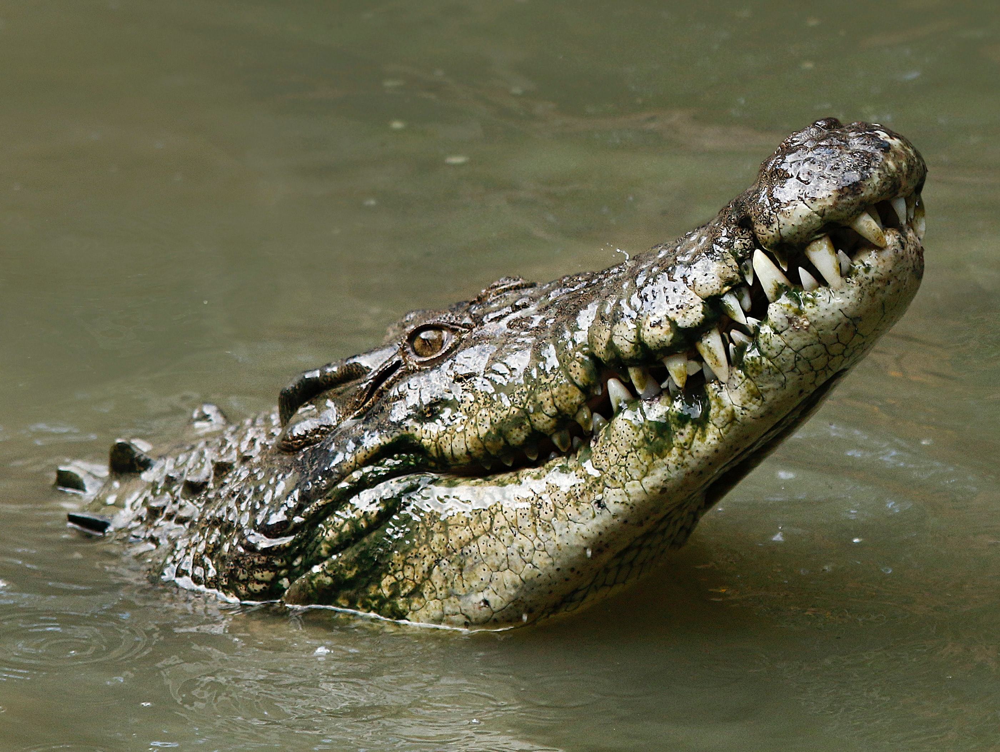
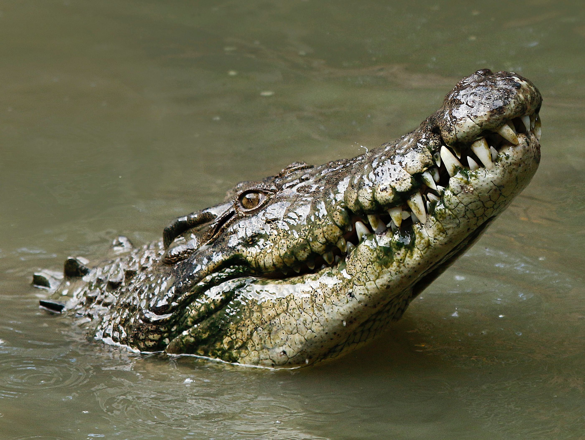

악어(鰐魚)는 악어목(鰐魚目, 영어: crocodilia)에 속하는 파충류의 총칭으로, 공룡이나 새와 친연관계가 있다. 전 세계적으로 23종이 알려져 있다. 악어는 물을 수는 있어도 씹지는 못하기 때문에 잡은 동물들을 빙글 돌리면서 몸통을 잘라 통째로 먹는다. 주로 물가에 매복하였다가 물 마시는 누, 얼룩말 등을 잡아 먹는다. 재규어에게는 천적 대상이다.
 
